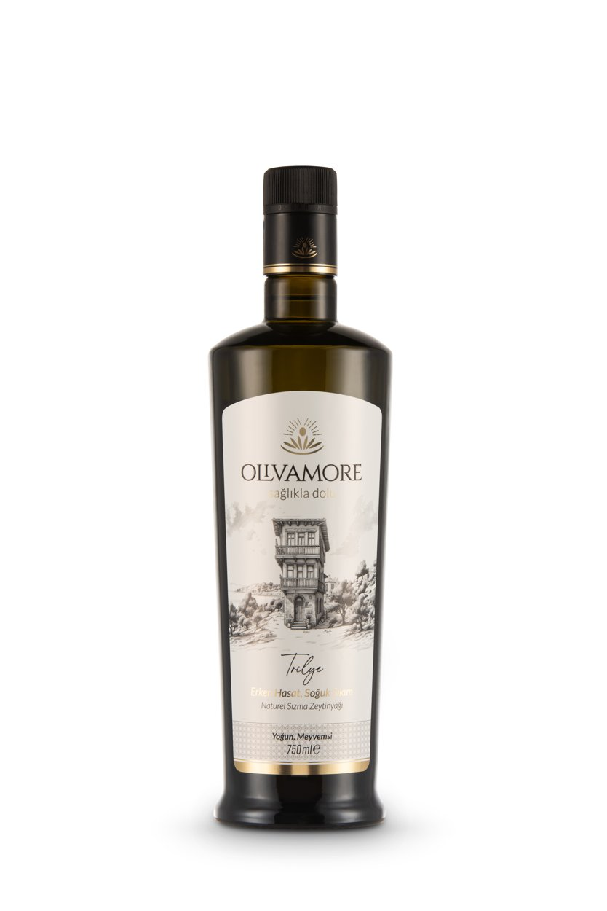
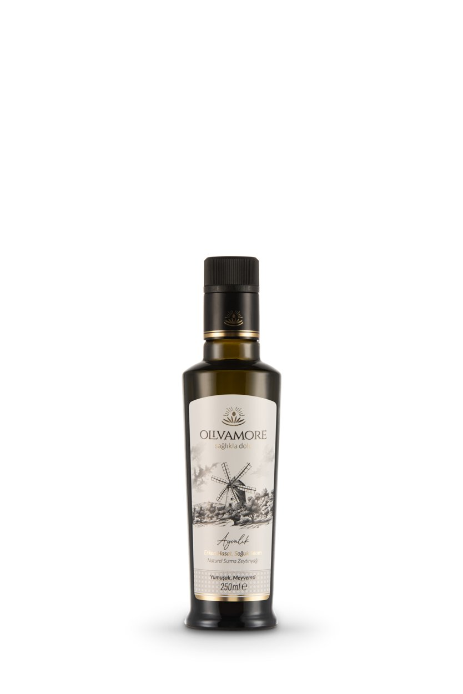
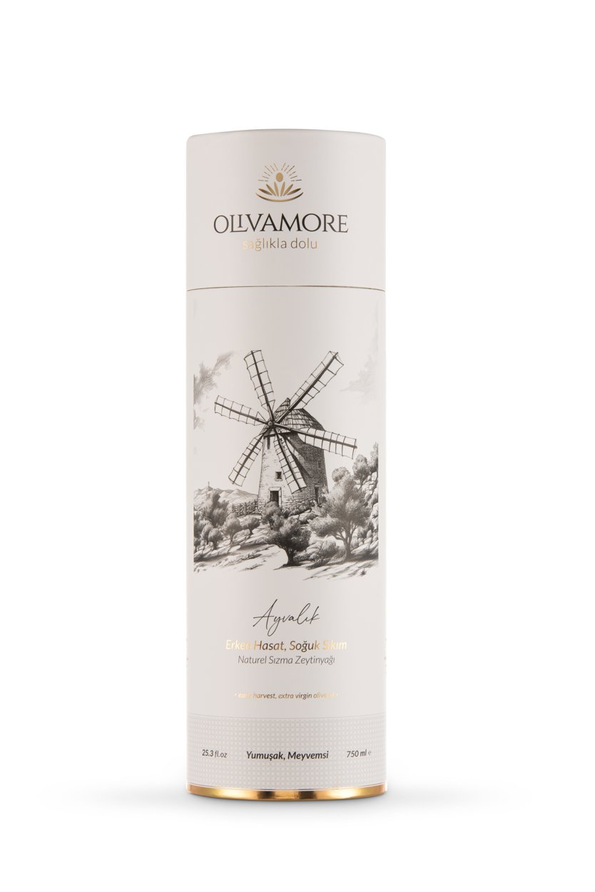
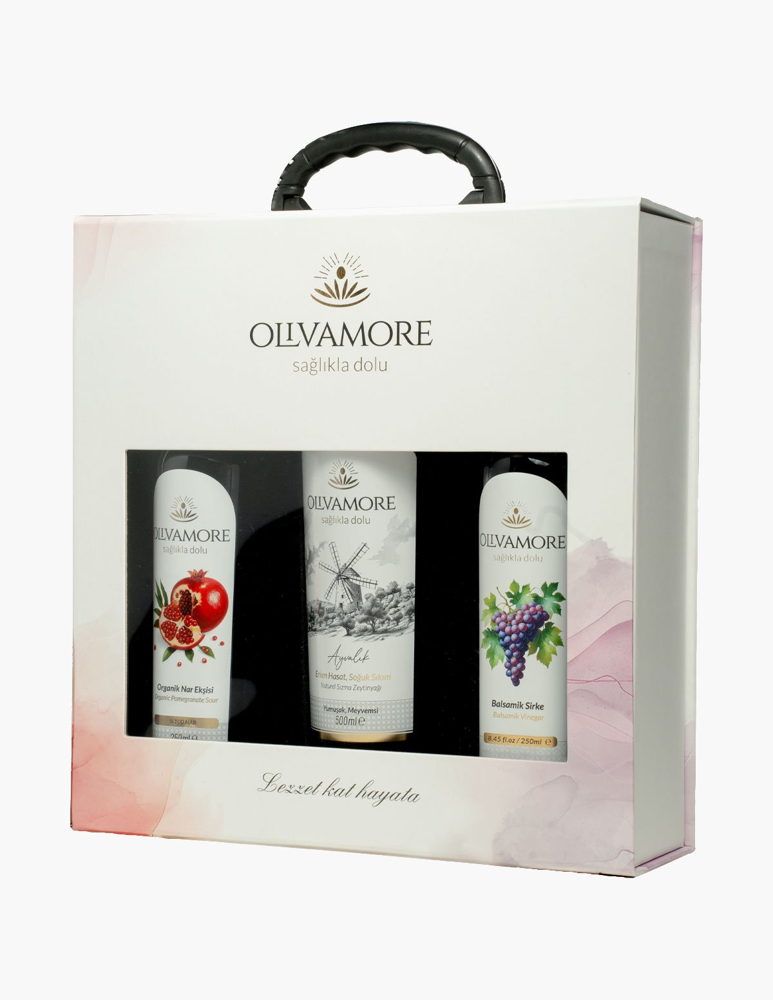
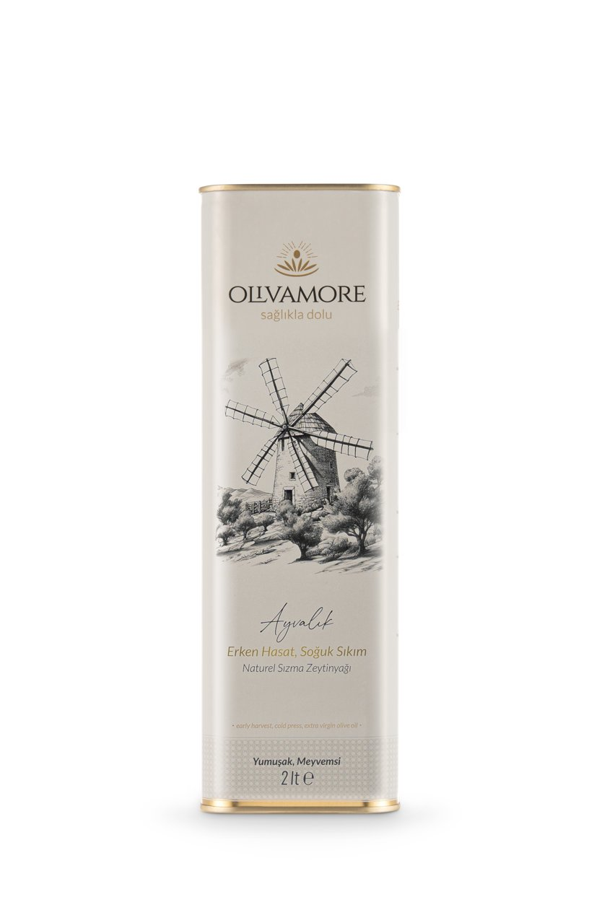
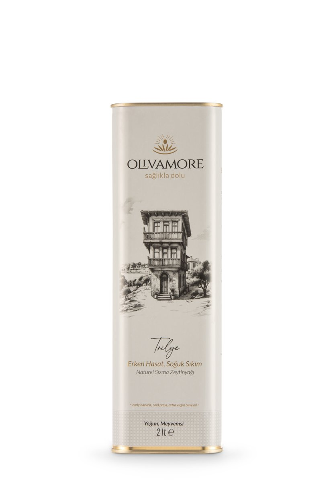
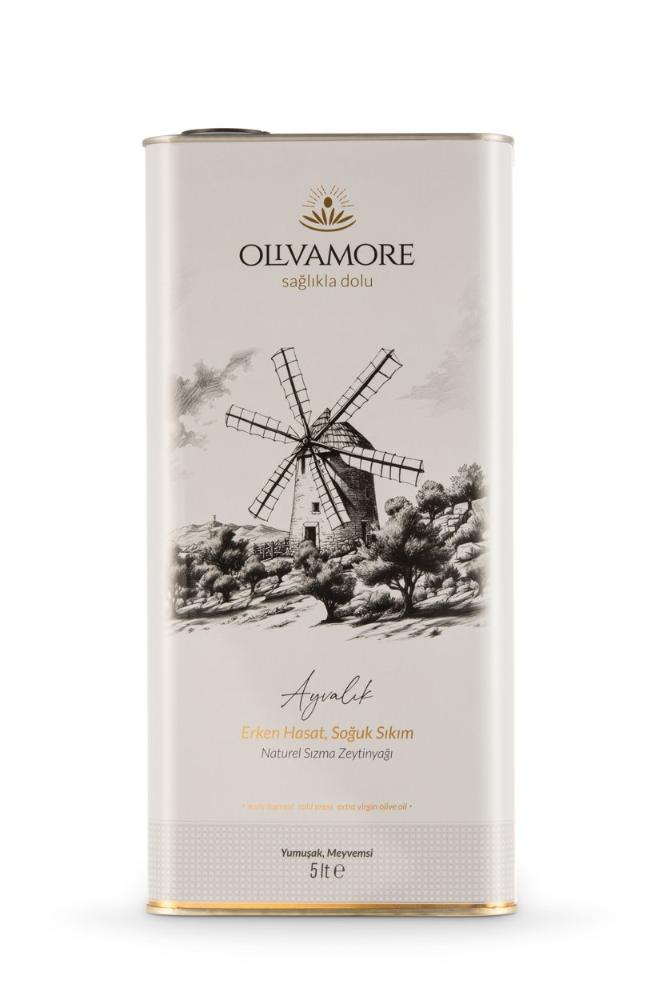

Çok Satan
Bitirme Zeytinyağı
Ayvalık Erken Hasat
₺850 / 500 mlYumuşak, meyvemsi. Ekim hasadı, soğuk sıkım. Cam şişe.
Ayvalık'ın yumuşak dokusundan Trilye'nin yoğun karakterine; tat, kullanım, hacim ve KDV dahil fiyata göre seç.
Yumuşak, meyvemsi. Ekim hasadı, soğuk sıkım. Cam şişe.

Yoğun, meyvemsi. Karakterli bir erken hasat. Cam şişe.

Tanışma boyu. Aynı hasat, aynı özen. Cam şişe.

Şık silindir kutusu ve kişisel notunla sunulmaya hazır.

Setini Oluştur →Kutunu seç, 100 ml şişelerini sen belirle, notunu yaz.

Mutfağın günlük dostu. Işık geçirmez teneke, aynı erken hasat.

Yoğun profili sevenlere büyük boy. Işık geçirmez teneke.

Kalabalık sofralar ve sık zeytinyağı kullananlar için.
Sıcak yemeklerin, zeytinyağlıların ve fırının günlük yağı. Yumuşak acılık, dengeli gövde.
Yanlış cevap yok. Soru "hangisi daha iyi" değil; hangi sofraya, hangi damağa.
Yumuşak, meyvemsi · yeşil elma tazeliği · düşük acılık
Yoğun, meyvemsi · biberimsi final · karakterli gövde
Hâlâ kararsız mısın? 10 soruluk Damak Pusulasını çöz; senin için seçtiğimiz ürünü ve iki keşif önerisini gör.
Naturel sızma zeytinyağını değerlendirirken hasat tarihi, menşe, saklama ve partiye ait analiz sonuçları birlikte okunur. Olivamore'da hasat ve parti bilgileri etikette; yayımlanabilen kimyasal değerler ise ilgili analiz raporunda gösterilir. Belge, ödül ve analiz beyanları yalnızca ilgili ürün ve parti kapsamında değerlendirilir.
Ayvalık erken hasadı domates–peynir salatası, humus ve kahvaltıda serviste; Trilye erken hasadı fırından çıkan balık, köz patlıcan ve rokalı salatada son dokunuş olarak öne çıkar. Nohut, türlü, taze fasulye ve fırın sebze gibi günlük pişirmelerde Olgun Hasat'ı yemeğin başından itibaren kullan.